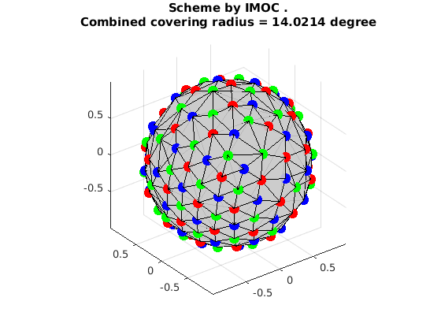

Generate a multi-shell scheme by using IMOC + 1-Opt + CNLO
This is a demo to generate a multi-shell scheme (e.g. 3 shells 28 samples per shell) by using IMOC + 1-Opt + CNLO.
OptimalSamplingMultiShellCNLO is in matlab. But to run IMOC and 1-Opt, you need to build the dmritool C++ codes.
Reference:
1. "Single- and Multiple-Shell Uniform Sampling Schemes for Diffusion MRI Using Spherical Codes", Jian Cheng, Dinggang Shen, Pew-Thian Yap, Peter J. Basser, IEEE Transactions on Medical Imaging, 2017.
2. "Novel single and multiple shell uniform sampling schemes for diffusion MRI using spherical codes", Jian Cheng, Dinggang Shen, Pew-Thian Yap, Peter J. Basser, MICCAI 2015.
Copyright (c) 2016, Jian Cheng (jian.cheng.1983@gmail.com)
Contents
IMOC to design a multi-shell scheme (28,28,28)
tic ! SamplingSchemeQSpaceIMOCEstimation grad_28x3_IMOC.txt --tessOrder 7 --numberOfSamples 28,28,28 toc grad_IMOC_shell1 = ReadDirections('grad_28x3_IMOC_shell1.txt'); grad_IMOC_shell2 = ReadDirections('grad_28x3_IMOC_shell2.txt'); grad_IMOC_shell3 = ReadDirections('grad_28x3_IMOC_shell3.txt'); fprintf('\nConvering radii:\t %10.3f\t%10.3f\t%10.3f\t%10.3f\n',... CoveringRadius(grad_IMOC_shell1)*180/pi,CoveringRadius(grad_IMOC_shell2)*180/pi,CoveringRadius(grad_IMOC_shell3)*180/pi,... CoveringRadius([grad_IMOC_shell1;grad_IMOC_shell2;grad_IMOC_shell3])*180/pi); VisualizeMultiShellScheme(grad_IMOC_shell1, grad_IMOC_shell2, grad_IMOC_shell3); title({'Scheme by IMOC .', ['Combined covering radius = ', num2str(CoveringRadius([grad_IMOC_shell1;grad_IMOC_shell2;grad_IMOC_shell3])*180/pi), ' degree']});
Elapsed time : 61.7609 save orientations in shell 1 to grad_28x3_IMOC_shell1.txt save orientations in shell 2 to grad_28x3_IMOC_shell2.txt save orientations in shell 3 to grad_28x3_IMOC_shell3.txt Elapsed time is 62.332378 seconds. Convering radii: 24.284 24.264 24.264 14.021
IMOC + 1-Opt to design a multi-shell scheme (28,28,28)
tic ! SamplingSchemeQSpace1OptEstimation grad_28x3_IMOC1Opt.txt --initial grad_28x3_IMOC_shell1.txt,grad_28x3_IMOC_shell2.txt,grad_28x3_IMOC_shell3.txt --tessOrder 7 toc grad_IMOC_1Opt_shell1 = ReadDirections('grad_28x3_IMOC1Opt_shell1.txt'); grad_IMOC_1Opt_shell2 = ReadDirections('grad_28x3_IMOC1Opt_shell2.txt'); grad_IMOC_1Opt_shell3 = ReadDirections('grad_28x3_IMOC1Opt_shell3.txt'); fprintf('\nConvering radii:\t %10.3f\t%10.3f\t%10.3f\t%10.3f\n',... CoveringRadius(grad_IMOC_1Opt_shell1)*180/pi,CoveringRadius(grad_IMOC_1Opt_shell2)*180/pi,CoveringRadius(grad_IMOC_1Opt_shell3)*180/pi, ... CoveringRadius([grad_IMOC_1Opt_shell1;grad_IMOC_1Opt_shell2;grad_IMOC_1Opt_shell3])*180/pi); VisualizeMultiShellScheme(grad_IMOC_1Opt_shell1, grad_IMOC_1Opt_shell2, grad_IMOC_1Opt_shell3); title({'Scheme by IMOC + 1-Opt.', ['Combined covering radius = ', num2str(CoveringRadius([grad_IMOC_1Opt_shell1;grad_IMOC_1Opt_shell2;grad_IMOC_1Opt_shell3])*180/pi), ' degree']});
Elapsed time : 18.7151 save orientations in shell 1 to grad_28x3_IMOC1Opt_shell1.txt save orientations in shell 2 to grad_28x3_IMOC1Opt_shell2.txt save orientations in shell 3 to grad_28x3_IMOC1Opt_shell3.txt Elapsed time is 18.834665 seconds. Convering radii: 24.284 24.382 24.329 14.026
IMOC + 1-Opt + CNLO to design a multi-shell scheme (28,28,28)
clear param; % weight between individual shell and combined shell param.w = 0.5; % solver can be nlopt or matlab. Matlab solver is slow. param.solver = 'nlopt'; % param.solver = 'matlab'; % use local constraint for fast CNLO param.localCon = 2; param.localConAngle = 0.1; % maxtime only for single run, the run time may be longer for whole process if the number of samples is large. param.maxtime = 600; param.verbose = 1; grad{1}=grad_IMOC_1Opt_shell1; grad{2}=grad_IMOC_1Opt_shell2; grad{3}=grad_IMOC_1Opt_shell3; tic [gradCell,xopt, fopt, retcode] = OptimalSamplingMultiShellCNLO(grad, param); toc fprintf('\nConvering radii:\t %10.3f\t%10.3f\t%10.3f\t%10.3f\t\n',... CoveringRadius(gradCell{1})*180/pi,CoveringRadius(gradCell{2})*180/pi,CoveringRadius(gradCell{3})*180/pi, ... CoveringRadius([gradCell{1};gradCell{2};gradCell{3}])*180/pi); VisualizeMultiShellScheme(gradCell{1}, gradCell{2}, gradCell{3}); title({'Scheme by IMOC + 1-Opt + CNLO.', ['Combined covering radius = ', num2str(CoveringRadius([gradCell{1};gradCell{2};gradCell{3}])*180/pi), ' degree']});
nlopt_optimize eval #1: 0.334733 nlopt_optimize eval #2: 0.34308 nlopt_optimize eval #3: 0.34534 nlopt_optimize eval #4: 0.346912 nlopt_optimize eval #5: 0.348025 nlopt_optimize eval #6: 0.348573 nlopt_optimize eval #7: 0.349208 nlopt_optimize eval #8: 0.349886 nlopt_optimize eval #9: 0.350512 nlopt_optimize eval #10: 0.351011 nlopt_optimize eval #11: 0.351353 nlopt_optimize eval #12: 0.351561 nlopt_optimize eval #13: 0.351756 nlopt_optimize eval #14: 0.351902 nlopt_optimize eval #15: 0.35201 nlopt_optimize eval #16: 0.352129 nlopt_optimize eval #17: 0.352156 nlopt_optimize eval #18: 0.352207 nlopt_optimize eval #19: 0.352259 nlopt_optimize eval #20: 0.352338 nlopt_optimize eval #21: 0.352392 nlopt_optimize eval #22: 0.352378 nlopt_optimize eval #23: 0.352388 nlopt_optimize eval #24: 0.352398 nlopt_optimize eval #25: 0.35241 nlopt_optimize eval #26: 0.352423 nlopt_optimize eval #27: 0.352437 nlopt_optimize eval #28: 0.352464 nlopt_optimize eval #29: 0.352491 nlopt_optimize eval #30: 0.352501 nlopt_optimize eval #31: 0.352508 nlopt_optimize eval #32: 0.352509 nlopt_optimize eval #33: 0.352511 nlopt_optimize eval #34: 0.352513 nlopt_optimize eval #35: 0.352514 nlopt_optimize eval #36: 0.352515 nlopt_optimize eval #37: 0.35252 nlopt_optimize eval #38: 0.352529 nlopt_optimize eval #39: 0.352529 nlopt_optimize eval #40: 0.352528 nlopt_optimize eval #41: 0.352529 nlopt_optimize eval #42: 0.35253 nlopt_optimize eval #43: 0.352531 nlopt_optimize eval #44: 0.352532 nlopt_optimize eval #45: 0.352537 nlopt_optimize eval #46: 0.352552 nlopt_optimize eval #47: 0.35258 nlopt_optimize eval #48: 0.352585 nlopt_optimize eval #49: 0.3526 nlopt_optimize eval #50: 0.352622 nlopt_optimize eval #51: 0.352638 nlopt_optimize eval #52: 0.352651 nlopt_optimize eval #53: 0.352684 nlopt_optimize eval #54: 0.352766 nlopt_optimize eval #55: 0.352893 nlopt_optimize eval #56: 0.352997 nlopt_optimize eval #57: 0.353015 nlopt_optimize eval #58: 0.353005 nlopt_optimize eval #59: 0.353013 nlopt_optimize eval #60: 0.353029 nlopt_optimize eval #61: 0.353052 nlopt_optimize eval #62: 0.353079 nlopt_optimize eval #63: 0.353097 nlopt_optimize eval #64: 0.353106 nlopt_optimize eval #65: 0.3531 nlopt_optimize eval #66: 0.353101 nlopt_optimize eval #67: 0.353106 nlopt_optimize eval #68: 0.353104 nlopt_optimize eval #69: 0.353104 nlopt_optimize eval #70: 0.35311 nlopt_optimize eval #71: 0.353115 nlopt_optimize eval #72: 0.353112 nlopt_optimize eval #73: 0.353114 nlopt_optimize eval #74: 0.353116 nlopt_optimize eval #75: 0.353118 nlopt_optimize eval #76: 0.353123 nlopt_optimize eval #77: 0.353128 nlopt_optimize eval #78: 0.353125 nlopt_optimize eval #79: 0.353126 nlopt_optimize eval #80: 0.353127 nlopt_optimize eval #81: 0.353127 1-th shell: angleOld=24.2836513627 angle=24.9435797527 Combined shell: angleOld=14.0259566556 angle=14.7333563514 nlopt_optimize eval #1: 0.353126 nlopt_optimize eval #2: 0.35314 nlopt_optimize eval #3: 0.353184 nlopt_optimize eval #4: 0.353256 nlopt_optimize eval #5: 0.353296 nlopt_optimize eval #6: 0.353333 nlopt_optimize eval #7: 0.353401 nlopt_optimize eval #8: 0.353444 nlopt_optimize eval #9: 0.353473 nlopt_optimize eval #10: 0.353503 nlopt_optimize eval #11: 0.353543 nlopt_optimize eval #12: 0.353587 nlopt_optimize eval #13: 0.353623 nlopt_optimize eval #14: 0.353712 nlopt_optimize eval #15: 0.35388 nlopt_optimize eval #16: 0.353967 nlopt_optimize eval #17: 0.353991 nlopt_optimize eval #18: 0.354052 nlopt_optimize eval #19: 0.354114 nlopt_optimize eval #20: 0.354175 nlopt_optimize eval #21: 0.354257 nlopt_optimize eval #22: 0.354336 nlopt_optimize eval #23: 0.354402 nlopt_optimize eval #24: 0.354483 nlopt_optimize eval #25: 0.354599 nlopt_optimize eval #26: 0.354653 nlopt_optimize eval #27: 0.354744 nlopt_optimize eval #28: 0.354824 nlopt_optimize eval #29: 0.354859 nlopt_optimize eval #30: 0.354906 nlopt_optimize eval #31: 0.354928 nlopt_optimize eval #32: 0.354939 nlopt_optimize eval #33: 0.355001 nlopt_optimize eval #34: 0.355099 nlopt_optimize eval #35: 0.355104 nlopt_optimize eval #36: 0.35512 nlopt_optimize eval #37: 0.355148 nlopt_optimize eval #38: 0.355152 nlopt_optimize eval #39: 0.355154 nlopt_optimize eval #40: 0.355163 nlopt_optimize eval #41: 0.355172 nlopt_optimize eval #42: 0.355173 nlopt_optimize eval #43: 0.355177 nlopt_optimize eval #44: 0.355181 nlopt_optimize eval #45: 0.355183 nlopt_optimize eval #46: 0.355194 nlopt_optimize eval #47: 0.355228 nlopt_optimize eval #48: 0.355254 nlopt_optimize eval #49: 0.355243 nlopt_optimize eval #50: 0.355253 nlopt_optimize eval #51: 0.355264 nlopt_optimize eval #52: 0.355277 nlopt_optimize eval #53: 0.355293 nlopt_optimize eval #54: 0.355303 nlopt_optimize eval #55: 0.355305 nlopt_optimize eval #56: 0.355319 nlopt_optimize eval #57: 0.355336 nlopt_optimize eval #58: 0.355356 nlopt_optimize eval #59: 0.355377 nlopt_optimize eval #60: 0.355379 nlopt_optimize eval #61: 0.355381 nlopt_optimize eval #62: 0.35539 nlopt_optimize eval #63: 0.35541 nlopt_optimize eval #64: 0.355413 nlopt_optimize eval #65: 0.355421 nlopt_optimize eval #66: 0.355465 nlopt_optimize eval #67: 0.355555 nlopt_optimize eval #68: 0.355551 nlopt_optimize eval #69: 0.35555 nlopt_optimize eval #70: 0.355559 nlopt_optimize eval #71: 0.35557 nlopt_optimize eval #72: 0.355578 nlopt_optimize eval #73: 0.355587 nlopt_optimize eval #74: 0.355601 nlopt_optimize eval #75: 0.355605 nlopt_optimize eval #76: 0.355603 nlopt_optimize eval #77: 0.355604 nlopt_optimize eval #78: 0.355606 nlopt_optimize eval #79: 0.35561 nlopt_optimize eval #80: 0.35561 nlopt_optimize eval #81: 0.355611 nlopt_optimize eval #82: 0.355611 1-th shell: angleOld=24.9435797527 angle=26.0804529355 Combined shell: angleOld=14.7333563514 angle=14.3712680256 nlopt_optimize eval #1: 0.35561 nlopt_optimize eval #2: 0.355624 nlopt_optimize eval #3: 0.355631 nlopt_optimize eval #4: 0.355642 nlopt_optimize eval #5: 0.355659 nlopt_optimize eval #6: 0.355668 nlopt_optimize eval #7: 0.355674 nlopt_optimize eval #8: 0.355687 nlopt_optimize eval #9: 0.355693 nlopt_optimize eval #10: 0.355708 nlopt_optimize eval #11: 0.355726 nlopt_optimize eval #12: 0.355721 nlopt_optimize eval #13: 0.355731 nlopt_optimize eval #14: 0.355756 nlopt_optimize eval #15: 0.355802 nlopt_optimize eval #16: 0.355859 nlopt_optimize eval #17: 0.355852 nlopt_optimize eval #18: 0.35586 nlopt_optimize eval #19: 0.35587 nlopt_optimize eval #20: 0.355873 nlopt_optimize eval #21: 0.355876 nlopt_optimize eval #22: 0.355876 1-th shell: angleOld=26.0804529355 angle=26.0360636351 2-th shell: angleOld=26.2295619574 angle=26.3057347474 Combined shell: angleOld=14.3712680256 angle=14.3652049033 nlopt_optimize eval #1: 0.355875 nlopt_optimize eval #2: 0.355878 nlopt_optimize eval #3: 0.355886 nlopt_optimize eval #4: 0.355911 nlopt_optimize eval #5: 0.355933 nlopt_optimize eval #6: 0.355953 nlopt_optimize eval #7: 0.355963 nlopt_optimize eval #8: 0.355962 nlopt_optimize eval #9: 0.355964 nlopt_optimize eval #10: 0.355967 nlopt_optimize eval #11: 0.355969 nlopt_optimize eval #12: 0.355971 nlopt_optimize eval #13: 0.355974 nlopt_optimize eval #14: 0.355979 nlopt_optimize eval #15: 0.355984 nlopt_optimize eval #16: 0.355986 nlopt_optimize eval #17: 0.355988 nlopt_optimize eval #18: 0.355989 nlopt_optimize eval #19: 0.355989 1-th shell: angleOld=26.0360636351 angle=26.0641991198 Combined shell: angleOld=14.3652049033 angle=14.3646796978 nlopt_optimize eval #1: 0.355988 nlopt_optimize eval #2: 0.355989 nlopt_optimize eval #3: 0.355989 1-th shell: angleOld=26.0641991198 angle=26.0642827448 2-th shell: angleOld=26.3150455933 angle=26.3150810853 3-th shell: angleOld=26.9064950641 angle=26.9068384831 Combined shell: angleOld=14.3646796978 angle=14.3645585204 nlopt_optimize eval #1: 0.355989 nlopt_optimize eval #2: 0.355989 nlopt_optimize eval #3: 0.355989 1-th shell: angleOld=26.0642827448 angle=26.0642945155 2-th shell: angleOld=26.3150810853 angle=26.3151349227 3-th shell: angleOld=26.9068384831 angle=26.9066268595 Combined shell: angleOld=14.3645585204 angle=14.3646192419 Elapsed time is 28.693278 seconds. Convering radii: 26.064 26.315 26.907 14.365